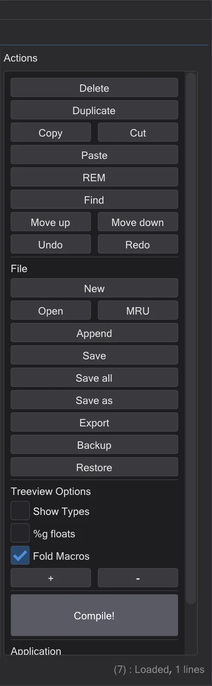
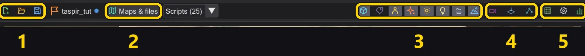
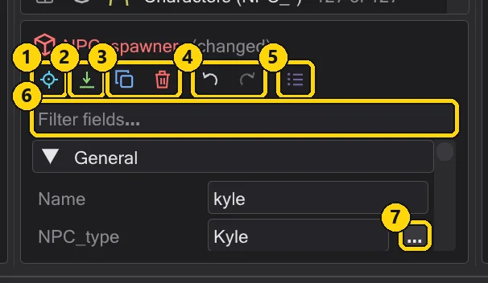
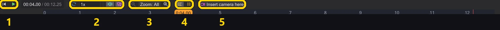
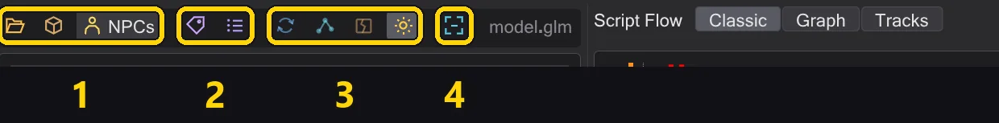

Every button
Each button of the program - the mode bar, the action column, the map toolbar, the placement tiles, the inspector, the camera, the timeline and the model view - with what it does.
Hover over any button in the program to see the same explanation as a tooltip. Buttons with a coloured frame are switches: on or off.
The mode bar#
The strip at the far left switches what the window shows. The script stays the same in every mode.
| Mode | What it shows |
|---|---|
| イベント | The イベント list of every command and macro, the script tree, the action column - for writing scripts. スクリプトを書く |
| ミッション | The mission: the entity list and inspector, the map in 3D with the timeline below - for cameras, figures, entities and saving the mission. マップ |
| モデル | A character model with its animations - to find an animation and put it into the script. モデルビューとキャラクター |
The action column (Events mode)#

| Button | What it does |
|---|---|
| 削除 | Removes the selected lines (Delete). |
| 複製 | Inserts a copy right below (Space). |
| コピー / 切り取り / 貼り付け | Clipboard (Ctrl+C / X / V). Paste goes below the selection; text from other programs is accepted after a question. |
| コメント化 | Turns lines into comments and back (Backspace). |
| 検索 | The Find window (Ctrl+F): search by command or value, replace in one or all scripts. Find and replace in all open scripts |
| 上へ / 下へ | Moves the selection one line, inside its block (Alt+Up/Down). |
| 元に戻す / やり直し | Undo and redo. Right-click either one for the full history. Undo anything - even one step from the middle |
| 新規 / 開く | An empty script / open a .txt or a compiled .ibi. |
| 最近使用 | Recently opened files (Alt+M). |
| 追加読み込み | Adds another script to the end of this one. |
| 保存 / すべて保存 / 名前を付けて保存 | Save this script, every changed tab, or under a new name. |
| エクスポート | Writes the script as plain text and opens it. |
| バックアップ / 復元 | Keeps a copy next to the script (.bak) / goes back to it (Alt+B / Alt+R). |
| 型を表示 | Shows the value types in the tree. |
| %g 浮動小数 | Shows numbers short: 1000 instead of 1000.000. |
| マクロを畳む | Shows a macro as one line. |
| + / - | Expands or collapses every block. |
| コンパイル！ | Saves the script and writes the .ibi the game runs; green when it worked, red with the messages when not. Compile and fix errors |
The map toolbar (Mission mode)#

| Button | What it does |
|---|---|
| 新規ミッション | Starts a mission on any map: player start, script runner, intro script and mission folder are created. 1 · Create the mission |
| ミッションを読み込む… | Opens a mission from a .pk3: map, entities, every script in tabs, the figures. ミッション |
| ミッションを保存 | Saves every script, writes the .ent, compiles and packs the .pk3 - after checking the mission. 8 · Save and play |
| ミッションなし | The name of the open mission; a dot means unsaved changes. Hover for its folder. |
| マップとファイル | Opens a map from disk or from a .pk3, a mission folder, or a separate .ent file. |
| スクリプト | The scripts the map's entities point to - pick one to open it. |
| エンティティ | Shows the entity markers: walk targets, marks, runners, spawners. |
| 名前 | Writes the names of entities and figures into the view. |
| キャラクター | Shows the script's figures, moved by the timeline. |
| エフェクト | Shows the effects of the map (fx_runner). |
| グロー | The glow of shaders marked glow, as r_DynamicGlow. |
| 動的ライト | Lightsabers and effect lights light up walls and figures. |
| 霧 | The fog of the map, as the game draws it. |
| 空 | The sky; switched off you can look into the map from outside. |
| カメラ視点 | Shows what the camera sees - the selected camera command, or the camera at the playhead. Look through the camera while you work |
| トップビュー | Looks straight down; a cut height hides ceilings. Look at the map from above |
| NPC ウェイポイント | The NPC waypoint window: show, create and check the network. NPC ウェイポイント |
| グリッド | Snaps entities to 8 to 64 units while dragging and placing. |
| 表示設定 | Brightness, ambient light, detail, shadows, highlighting the active script's entities. See better in dark maps |
| 統計 | Frame rate, textures, triangles and graphics card values. |
The placement tiles#
The strip on the left edge of the map. Click a tile, then click on the floor - or drag the tile into the view. Shift places several, Esc stops. Place, move and turn entities
| Button | What it does |
|---|---|
| キャラクター (NPC_spawner) | A character that spawns: set NPC_type and a name. |
| 移動先 (waypoint_navgoal) | A place a figure walks to (SET_NAVGOAL). |
| カメラ/注視マーク (ref_tag) | A mark with a direction - for cameras (tag) and look targets. |
| 注視先 (target_position) | A point to look at or to aim at. |
| スクリプトランナー (target_scriptrunner) | Runs a script when it is used - by a trigger, the player start or another script. |
| エフェクト (fx_runner) | Plays an effect file (.efx). |
| サウンド (target_speaker) | Plays a sound, once or in a loop. |
| NPC ウェイポイント (waypoint) | A point of the NPC navigation network. |
| プレイヤー開始位置 (info_player_start) | Where the player spawns. |
The entity inspector#

| Button | What it does |
|---|---|
| そこへ移動 | Flies the view to the entity. |
| 床に置く | Puts it on the floor below, like DROPTOFLOOR in the game. |
| 複製 | A copy - of every selected entity. Alt+drag in the view does the same. |
| 削除 | Removes it. |
| アニメート | Opens the Animation window for doors, platforms, ships and effects. 可動物のアニメーションと ROFF ファイル |
| 元に戻す | Undoes the last entity change (entities have their own history). |
| やり直し | Redoes it. |
| すべてのキー (生) | Shows every key as plain text. |
| + キー | Adds a key. |
| 開く | Next to a script key: opens the script - and creates it in the mission folder if it does not exist yet. |
The camera bar#
Appears in the view when the camera is selected. カメラ

| Button | What it does |
|---|---|
| 移動 | Arrows: move the shot along one axis, the box in the middle in the view plane. |
| 回転 | Rings: turn the shot. |
| ワールド | World or Local: the arrows follow the map axes or the camera. |
| 前のショット | The previous shot. |
| 次のショット | The next shot. |
| ビューに合わせる | Puts the shot where you are looking. |
| 操縦 | Sit in the shot and fly it; Enter sets a key. Fly a camera shot yourself |
| カメラ視点 | Look through the camera. |
| カメラプレビュー | A small picture of the camera's view in the corner. |
| ここに新しいショット | A new shot at your view, after the selected one. |
| ショットを削除 | Removes the shot. |
The timeline#

| Button | What it does |
|---|---|
| 先頭へ | Back to the start of the script. |
| 再生 | Plays the scene - camera, figures, sound - in game time. |
| ループ | Starts again at the end. |
| サウンド | Plays the sounds while the timeline runs. |
| 追従 | Moves the view along with the camera. |
| ズームアウト | Shows more time. |
| ズームイン | Shows less time, in more detail. |
| キャラクター行 | One row per figure: when each one walks, speaks and acts. |
| 動きのないトラック | Also shows rows where nothing happens. |
| wait | Shows the waits as their own blocks. |
| ここにカメラを挿入 | Inserts a camera shot at the playhead. |
The time display switches between seconds and frames when you click it; the list next to the play button sets the speed. Drag blocks to move them in time - タイムライン.
The model toolbar (Model mode)#

| Button | What it does |
|---|---|
| .glm を開く… | Opens a .glm model from disk. |
| .pk3 から… | Opens a model from the game's archives. |
| NPC | Every character of the game - click one to load it as the game shows it. |
| .skin を開く… | Loads a .skin for the model. |
| .gla を読み込む… | Loads another skeleton / animation file (.gla). |
| ターンテーブル | Turns the model slowly around itself. |
| ボーン | Shows the skeleton. |
| キャップを表示 | Shows the caps of the surfaces where limbs attach. |
| テクスチャ | Textures on or off. |
| ビューに合わせる | The whole model in view, from the front. |
| コピー | In the animation list: copies the animation name. |
| スクリプトへ | Puts set ( SET_ANIM_BOTH, ... ) for the animation into the script. Let a figure play an animation |